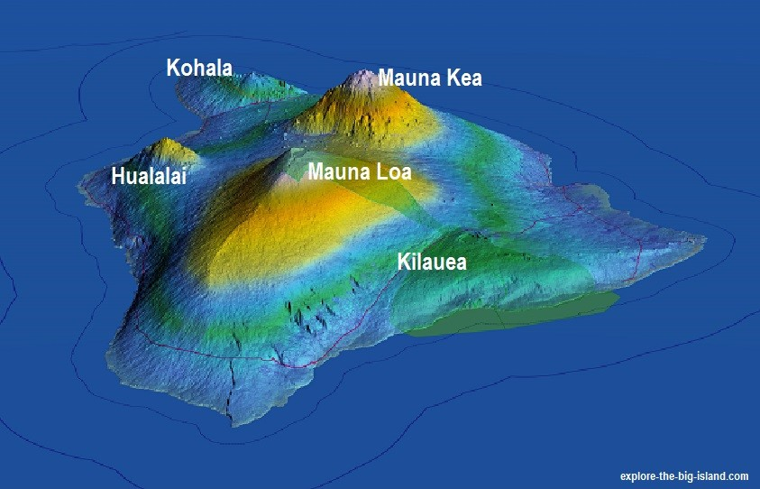

Shield Volcanoes slowly ozze lava, creating a
broad shape with gentle slopes
Shield volcanoes are usually constructed almost
entirely of basaltic and/or andesitic lava flows which were
very fluid when erupted. They are built by repeated
eruptions that occurred intermittently over vast periods
of time (up to a million years or longer).
Shield volcanoes are much wider than they are tall.
Famous examples of
Shield Volcanoes is Kiluea, and
Mauna Loa.Those two volcanoes
are located on a island in the American state of
Hawaii, along with other shield volcanoes.

Developed by Jujhar